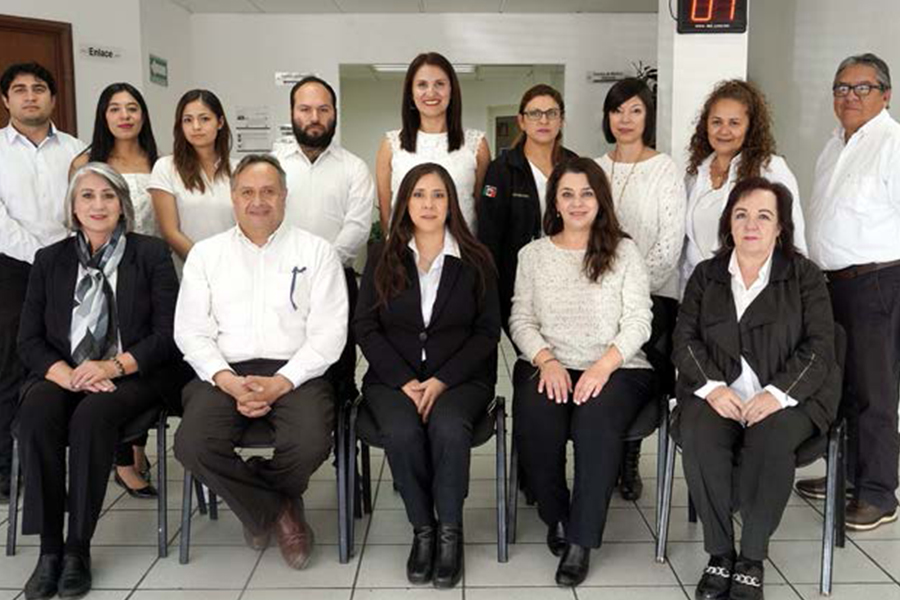
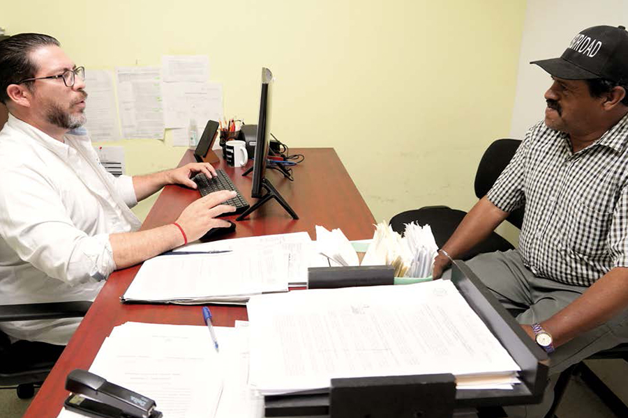

Consolidamos nuestro enfoque de justicia centrada en la persona con los servicios de mediación, defensoría y el impulso en el resto del país de nuestro modelo de Juzgados Especializados en Violencia Familiar
La impartición de una justicia cercana, humana y sensible a las necesidades de las y los coahuilenses ha sido prioridad para el Poder Judicial de Coahuila, la cual no solo signifique realizar el trámite solicitado, sino que la atención y el trato del personal judicial sea con empatía y comprensión hacia las personas usuarias.
En este sentido, durante el 2024, en el Poder Judicial llevamos a cabo una serie de acciones concretas y políticas orientadas a transformar la justicia, eliminar las barreras físicas y administrativas que dificultan el acceso a los servicios judiciales, y así garantizar que todas las personas, sin distinción, puedan acceder a un sistema judicial que no solo reconozca sus derechos, sino que los defienda y promueva activamente.
Para consolidar nuestro Modelo hemos potenciado los servicios de la Defensoría Pública, asegurando que quienes enfrentan situaciones legales complejas cuenten con la representación y el apoyo necesario. Nuestras iniciativas son proactivas, organizamos visitas a comunidades y sectores críticos para brindar asesoría jurídica accesible y de calidad, enfocándonos especialmente en aquellas poblaciones que históricamente se han visto marginadas y en desventaja.
El fortalecimiento de la atención al primer contacto y el seguimiento a casos mediante un enfoque de justicia restaurativa son fundamentales en nuestra labor. Los Juzgados Especializados en Violencia Familiar contra la Mujer, junto con herramientas como el Registro Estatal de Personas Sancionadas por Violencia, son ejemplos concretos de nuestro compromiso en erradicar la violencia y proteger a las víctimas, garantizando un entorno seguro y justo para todas las mujeres y sus familias. Además, hemos puesto especial énfasis en asegurar el cumplimiento de las obligaciones alimentarias, un derecho inalienable de las niñas, los niños y adolescentes coahuilenses, esencial para su desarrollo integral familiar.
Conscientes de que no todas las disputas requieren de una respuesta judicial convencional, también impulsamos los medios alternos de solución de controversias. Estos mecanismos ofrecen soluciones ágiles y satisfactorias, promoviendo la resolución pacífica de conflictos y el restablecimiento de relaciones entre las partes, sin la necesidad de un proceso largo y desgastante en los juzgados. La inclusión de alternativas de resolución de conflictos como la mediación y la justicia restaurativa son ejemplos de cómo el Modelo de Justicia de Coahuila ha ido más allá de la simple respuesta punitiva, procurando soluciones que promuevan la restauración del tejido social.
Igualmente, a través del Centro de Evaluación Psicosocial proporcionamos a las y los juzgadores información valiosa y fundamentada que facilita decisiones más justas y humanas, para asegurar el bienestar de las y los menores. Esta metodología de trabajo humaniza la labor del Poder Judicial, alineando nuestras actividades a estándares de calidad y congruencia, en concordancia con la línea de trabajo de este año, enfocada en la justicia al servicio de las niñas y los niños, para actuar siempre por el interés superior de las infancias.
Reconocemos que un entorno físico adecuado es vital para el desempeño del personal y la atención a la ciudadanía, por lo que mejoramos constantemente nuestras instalaciones, para asegurar que nuestros profesionales cuentan con espacios dignos y equipamiento necesario para ofrecer un servicio integral y eficiente. Este año se avanzó significativamente en la construcción de la Ciudad Judicial de Saltillo, que a partir de 2025 será un reflejo de nuestro Modelo en el acceso a la justicia para toda la Región Sureste. En el Poder Judicial de Coahuila trabajamos cada día para hacer de la justicia un camino accesible, inclusivo y equitativo.

Centro de Medios Alternos de Solución de Controversias
En el Poder Judicial promovemos el derecho humano de acceso a la justicia a través de mecanismos autocompositivos. Para ello, a través del Centro de Medios Alternos de Solución de Controversias (CEMASC) impulsamos la resolución de conflictos fuera del sistema judicial tradicional, creando espacios donde las partes puedan acercarse y dialogar, mediante la mediación y otras herramientas de justicia alternativa. A través de estos métodos, fomentamos una comunicación efectiva como herramienta principal, permitiendo que las partes involucradas alcancen acuerdos sin necesidad de un juicio.
Para garantizar la calidad de los procesos, contamos con un equipo de facilitadores capacitados y certificados, quienes guían a las partes con técnicas y recursos que les ayudan a lograr acuerdos pacíficos, justos, equilibrados y adecuados a las necesidades de cada caso.
Además, impulsamos la aplicación de la justicia alternativa en la comunidad, llevando nuestros servicios más cerca de la ciudadanía. Esto no solo facilita el acceso a la justicia, sino que también fortalece la confianza en el sistema judicial, por lo que durante el año que se informa, extendimos cerca de 12 mil invitaciones a la sociedad en general para iniciar este proceso, y proporcionamos orientación a nueve mil 118 personas, promoviendo acuerdos efectivos que respondan a sus necesidades.
A través de la difusión de los métodos alternativos, garantizamos una respuesta pronta y accesible para la ciudadanía, construyendo justicia desde el acuerdo y la cooperación, así como relaciones más armoniosas dentro de nuestra sociedad; y a la par, aliviar la carga de trabajo de los tribunales.
Tabla 1. Servicios prestados por el Centro de Medios alternos de Solución de Controversias
| Actividad | 2024 |
|---|---|
| Número de personas entrevistadas para la exploración del conflicto. | 9,118 |
| Invitaciones enviadas a efecto de acercar a otras partes involucradas en el conflicto. | 11,900 |
| Asuntos resueltos con la sola invitación. | 194 |
| Procedimientos iniciados por voluntad de las partes. | 2,437 |
| Procedimientos concluidos con acuerdo. | 1,420 |
| Procedimientos con reapertura. | 14 |
| Solicitantes que fueron atendidos y referidos a otra instancia. | 988 |
| Acuerdos que las partes manifiestan evitar juicios | 1,059 |
Fuente: Centro de Medios Alternos de Solución de Controversias. Poder Judicial del Estado de Coahuila de Zaragoza. 2024.
Expedientes de Mecanismos Alternativos iniciados por materia
La justicia alternativa ofrece una serie de métodos no judiciales para la resolución de conflictos, que evitan la intervención directa de una autoridad jurisdiccional. En su lugar, se recurre a especialistas en mediación, conciliación y facilitación, quienes se encargan de guiar a las partes hacia un acuerdo mutuo en un ambiente de cordialidad y respeto.
Estas dinámicas de diálogo permiten a las personas involucradas manejar sus conflictos de manera efectiva, voluntaria, gratuita y confidencial.
En este contexto, la apertura de expedientes no solo registra formalmente los casos, sino que también se convierte en una herramienta crucial para medir la efectividad y aceptación de la justicia alternativa dentro de la sociedad, reflejando el compromiso de este Poder Judicial en la promoción de enfoques más inclusivos y menos adversariales.
De esa manera, durante el periodo que se reporta, inciamos un total de dos mil 437 expedientes, los cuales nos permiten evaluar el impacto de los métodos de resolución de conflictos en la percepción pública, permitiendo ajustar y mejorar las estrategias implementadas.
Tabla 2. Expedientes de mecanismos alternativos iniciados por materia
| Delegación | Familiar | Civil | Mercantil | Penal | Total |
|---|---|---|---|---|---|
| Acuña | 14 | 88 | 16 | 9 | 127 |
| Monclova | 311 | 137 | 39 | 23 | 510 |
| Piedras Negras | 35 | 59 | 11 | 26 | 131 |
| Sabinas | 100 | 43 | 12 | 15 | 170 |
| Saltillo Centro | 555 | 312 | 64 | 0 | 931 |
| Saltillo Penal | 0 | 1 | 0 | 50 | 51 |
| Saltillo Sur | 74 | 27 | 20 | 0 | 121 |
| San Pedro | 39 | 56 | 13 | 5 | 113 |
| Torreón | 85 | 132 | 62 | 4 | 283 |
| Total | 1,213 | 855 | 237 | 132 | 2,437 |
Fuente: Centro de Medios Alternos de Solución de Controversias. Poder Judicial del Estado de Coahuila de Zaragoza. 2024.
Asuntos derivados a Mediación por órganos jurisdiccionales
En cuanto a los casos derivados de los juzgados, en 2024 gestionamos un total de 162 expedientes en distintas áreas legales. De éstos, 40 por ciento fueron formalizados por escrito.
Tabla 3. Expedientes de mecanismos alternativos derivados del juzgado
| Delegación | Expedientes judiciales | Familiar | Civil | Mercantil | Penal | Acuerdo escrito | Acuerdo verbal | Total de acuerdos |
|---|---|---|---|---|---|---|---|---|
| Acuña | 13 | 1 | 1 | 2 | 9 | 5 | 0 | 5 |
| Monclova | 27 | 3 | 0 | 0 | 24 | 11 | 0 | 11 |
| Piedras Negras | 27 | 1 | 0 | 0 | 26 | 17 | 0 | 17 |
| Sabinas | 16 | 1 | 0 | 0 | 15 | 4 | 0 | 4 |
| Saltillo Centro | 10 | 6 | 0 | 4 | 0 | 7 | 0 | 7 |
| Saltillo Penal | 50 | 0 | 1 | 0 | 49 | 14 | 0 | 14 |
| Saltillo Sur | 14 | 12 | 2 | 0 | 0 | 4 | 1 | 5 |
| San Pedro | 0 | 0 | 0 | 0 | 0 | 0 | 0 | 0 |
| Torreón | 5 | 0 | 0 | 2 | 3 | 4 | 0 | 4 |
| Total | 162 | 24 | 4 | 8 | 126 | 66 | 1 | 67 |
Fuente: Centro de Medios Alternos de Solución de Controversias. Poder Judicial del Estado de Coahuila de Zaragoza. 2024.
Mediación en materia penal y reparación del daño
La mediación favorece un enfoque más humano y comprensivo en la justicia penal, ya que permite a las partes involucradas afrontar las consecuencias de un daño, ofensa o delito de manera constructiva.
Su principal objetivo es la reparación del daño, enfocándose en las necesidades de las víctimas sin depender exclusivamente de la sanción al responsable, promoviendo un diálogo que fija la atención en las necesidades de las víctimas y en la búsqueda de una solución justa y equitativa.
Este proceso se lleva a cabo mediante acuerdos reparatorios o planes de reparación, que son diseñados de forma específica para atender las particularidades de cada asunto. Estos acuerdos no solo permiten a las víctimas recibir la compensación necesaria por el daño sufrido, sino que también ofertan a la persona autora del delito una oportunidad para asumir la responsabilidad de sus acciones y contribuir a la restauración del tejido social.
De esta manera, en 2024, iniciamos 197 casos en el marco de mecanismos alternativos penales en el estado. Como resultado, se lograron 53 acuerdos reparatorios, que representaron una compensación total de 15 millones 810 mil pesos a favor de las víctimas. Este avance subraya el compromiso del Poder Judicial de Coahuila con la promoción de la justicia restaurativa y la creciente aceptación de la mediación en el ámbito penal.
Tabla 4. Mediación en materia penal y reparación del daño
| Delegación | Solicitados | Iniciados | Acuerdo | $ Monto | Inmediato | Diferido | Total de asuntos |
|---|---|---|---|---|---|---|---|
| Acuña | 13 | 9 | 2 | $85,000.00 | 1 | 1 | 2 |
| Monclova | 46 | 23 | 10 | $2,062,000.00 | 3 | 7 | 10 |
| Piedras Negras | 57 | 26 | 16 | $1,490,088.00 | 2 | 14 | 16 |
| Sabinas | 16 | 15 | 4 | $58,950.00 | 0 | 4 | 4 |
| Saltillo | 56 | 50 | 15 | $11,969,150.00 | 7 | 7 | 14 |
| San Pedro | 5 | 5 | 4 | $20,500.00 | 2 | 2 | 4 |
| Torreón | 4 | 4 | 2 | $125,000.00 | 0 | 2 | 2 |
| Total | 197 | 132 | 53 | $15,810,688.00 | 15 | 37 | 52 |
Fuente: Centro de Medios Alternos de Solución de Controversias. Poder Judicial del Estado de Coahuila de Zaragoza. 2024.
Centro de Evaluación Psicosocial
La justicia debe brindar a niñas, niños y adolescentes condiciones seguras y especializadas para su desarrollo integral y su participación en procesos de justicia que los involucran, por eso, a través del Centro de Evaluación Psicosocial trabajamos para garantizar el interés superior de la niñez, implementando diversas acciones que ofrezcan una protección integral de sus derechos, la igualdad y no discriminación, acorde a su desarrollo en entornos sanos y libres de violencia.
Este Centro integrado por profesionales en psicología y trabajo social, auxilia y ofrece apoyo directo y eficaz a los órganos jurisdiccionales en todos los asuntos en los que se involucren niñas, niños y adolescentes.
El personal que labora en el Centro lleva a cabo entrevistas exhaustivas, realiza visitas domiciliarias y evalúa el entorno en el que viven las personas que están enfrentando un juicio. Además, analiza la capacidad de los padres o madres para asumir la responsabilidad del cuidado de sus hijos e hijas, utilizando pruebas psicológicas que permiten obtener una visión clara y detallada de la situación familiar y su entorno.
Este enfoque integral es fundamental, ya que proporciona a las autoridades jurisdiccionales información valiosa y elementos de convicción, a través de evaluaciones y dictámenes, sobre las vivencias, motivaciones y actitudes de las partes involucradas, con la finalidad de que se emita la sentencia que más favorezca a niñas, niños y adolescentes, dando plena satisfacción al derecho que tienen de acceder a la justicia en condiciones de igualdad, además de proprocionar la atención integral, diferencial y especializada que corresponda.
Para lograr lo anterior, contamos con ocho unidades del Centro de Evaluación Psicosocial (CEP) distribuidas en los distritos judiciales del estado, en los que durante el 2024, brindamos atención a 32 mil 471 personas, de las cuales se atendieron a 17 mil 799 en el área de trabajo social y a 13 mil 766 en el área de psicología.
Tabla 5. Casos atendidos por Unidad del Centro de Evaluación Psicosocial
| Casos canalizados | Acuña | Carbonífera | Centro | Laguna | Norte | Parras | San Pedro | Sureste | Total |
|---|---|---|---|---|---|---|---|---|---|
| Personas atendidas por psicología | 758 | 611 | 2,380 | 2,432 | 1,123 | 359 | 240 | 5,863 | 13,766 |
| Personas atendidas por trabajo social | 1,245 | 1,150 | 2,366 | 3,271 | 1,859 | 367 | 413 | 7,128 | 17,799 |
Fuente: Centro de Evaluación Psicosocial. Poder Judicial del Estado de Coahuila de Zaragoza. 2024.
Durante el año que se informa, emitimos tres mil 165 dictámenes, de los cuales dos mil 236 fueron enviados a los juzgados y 929 informes de trabajo social se entregaron al área de Psicología, para fundamentar los dictámenes psicosociales.
Tabla 6. Dictámenes realizados por el Centro de Evaluación Psicosocial
| Total de casos canalizados | Acuña | Carbonífera | Centro | Laguna | Norte | Parras | San Pedro | Sureste | Total |
|---|---|---|---|---|---|---|---|---|---|
| Dictámenes entregados a juzgados | 91 | 96 | 343 | 488 | 259 | 48 | 41 | 870 | 2,236 |
| Informes de trabajo social entregados a psicología | 62 | 48 | 159 | 160 | 140 | 19 | 26 | 315 | 929 |
Fuente: Centro de Evaluación Psicosocial. Poder Judicial del Estado de Coahuila de Zaragoza. 2024.
Para nosotros es fundamental que las personas usuarias tengan la certeza de que la autoridad jurisdiccional recibirá información objetiva y veraz, y para lograr esta meta hemos implementado un riguroso proceso de evaluación que incluye diversas metodologías de recolección de datos. Durante el periodo que se informa, realizamos un total de 26 mil 111 entrevistas, de las cuales 16 mil 859 fueron llevadas a cabo por el área de trabajo social, y nueve mil 252 por parte del personal especializado en Psicología.
Estas entrevistas no solo permiten recoger información clave sobre las circunstancias de cada caso, sino que también son una herramienta esencial para entender las necesidades y realidades de las personas usuarias. Nuestros profesionales están capacitados para abordar y tratar a las personas con respeto y empatía, asegurando que se sientan cómodas al compartir su información.
Además, llevamos a cabo 19 mil 721 visitas domiciliarias, las cuales complementan y enriquecen el proceso de evaluación ya que permiten observar el contexto en el que se desenvuelven las personas usuarias, y así obtenemos una visión más completa y detallada de su situación. Esta estrategia no solo fomenta un acercamiento más humano, sino que también asegura que la información recopilada sea precisa y refleje la realidad de cada caso.
Tabla 7. Entrevistas realizadas por el Centro de Evaluación Psicosocial
| Total de casos canalizados | Acuña | Carbonífera | Centro | Laguna | Norte | Parras | San Pedro | Sureste | Total |
|---|---|---|---|---|---|---|---|---|---|
| Entrevistas de trabajo social | 1,161 | 1,150 | 2,310 | 3,107 | 1,704 | 334 | 380 | 6,713 | 16,859 |
| Entrevistas de psicología | 733 | 293 | 2,354 | 2,432 | 1,073 | 303 | 200 | 1,864 | 9,252 |
| Visitas de investigación de campo | 729 | 707 | 2,798 | 3,338 | 1,595 | 280 | 400 | 9,874 | 19,721 |
Fuente: Centro de Evaluación Psicosocial. Poder Judicial del Estado de Coahuila de Zaragoza. 2024.
En nuestro compromiso por garantizar un proceso de justicia que respete y proteja los derechos de los niños, niñas y adolescentes, las solicitudes de pruebas de capacidad incluyeron a 613 niños y 583 niñas. De este total, un 48 por ciento resultaron aptos y aptas para comparecer ante la autoridad jurisdiccional y rendir su testimonio. Este proceso se lleva a cabo con el mayor cuidado y atención, asegurando que cada caso se maneje de manera adecuada y sensible a las particularidades del menor.
Entendemos que la etapa de desarrollo en la que se encuentran los niños, niñas y adolescentes es fundamental para determinar su capacidad de participar en el proceso judicial. Por ello, cuando evaluamos cada asunto, consideramos no solo las habilidades cognitivas y comunicativas de los menores, sino también su contexto emocional y social. Esto nos permite asegurarnos de que su participación no solo sea efectiva, sino también segura y constructiva.
Igualmente, es crucial prevenir el riesgo de que los menores se vean involucrados en un conflicto de lealtades, el cual podría comprometer su bienestar emocional y estabilidad. Para ello, implementamos estrategias que permiten abordar sus testimonios con sensibilidad, evitando situaciones que puedan causarles estrés o confusión.
Tabla 8. Comparecencias de niñas y niños en audiencias
| Comparecencias | Acuña | Carbonífera | Centro | Laguna | Norte | Parras | San Pedro | Sureste | Total |
|---|---|---|---|---|---|---|---|---|---|
| Niñas en audiencias | 21 | 28 | 34 | 140 | 68 | 21 | 4 | 297 | 613 |
| Niños en audiencias | 25 | 20 | 47 | 136 | 53 | 16 | 11 | 275 | 583 |
Fuente: Centro de Evaluación Psicosocial. Poder Judicial del Estado de Coahuila de Zaragoza. 2024.
Del porcentaje mencionado de niñas, niños y adolescentes aptos para acudir a comparecer ante la autoridad jurisdiccional y con apoyo del personal de Psicología, asistimos a 414 audiencias con el propósito de brindarles el acompañamiento al que tienen derecho, en apego al interés superior de la infancia que debe prevalecer, creando un entorno de confianza y protección en que los niños y niñas se sientan seguros para expresarse sin temor a repercusiones.
Tabla 9. Acompañamiento en audiencias
| Comparecencias | Acuña | Carbonífera | Centro | Laguna | Norte | Parras | San Pedro | Sureste | Total |
|---|---|---|---|---|---|---|---|---|---|
| Asistencia a audiencias de comparecencia | 8 | 25 | 39 | 113 | 31 | 7 | 3 | 188 | 414 |
Fuente: Centro de Evaluación Psicosocial. Poder Judicial del Estado de Coahuila de Zaragoza. 2024.
En 2024, asistimos a mil 756 audiencias para desahogar los dictámenes realizados según la legislación procedimental de cada materia. En esta audiencia, las partes tienen el derecho de controvertir e interrogar al perito encargado de emitir el dictamen, quien debe contar con la fundamentación profesional y metodológica para sustentar su intervención.
Tabla 10. Acompañamiento a audiencias de evaluaciones
| Comparecencias | Acuña | Carbonífera | Centro | Laguna | Norte | Parras | San Pedro | Sureste | Total |
|---|---|---|---|---|---|---|---|---|---|
| Asistencia a audiencias de evaluaciones | 19 | 184 | 194 | 268 | 243 | 12 | 9 | 827 | 1,756 |
Fuente: Centro de Evaluación Psicosocial. Poder Judicial del Estado de Coahuila de Zaragoza. 2024.

Asimismo, durante 2024, auxiliamos a los Juzgados Especializados en Violencia Familiar contra las Mujeres, elaborando diagnósticos de interacción familiar a fin de brindar herramientas de apoyo para que las personas juzgadoras determinen las medidas necesarias para atender y erradicar la violencia familiar, así como hacer efectivas las medidas de protección para salvaguardar a las mujeres, hijas e hijos.
En ese sentido, brindamos atención a tres mil 682 personas, efectuamos tres mil 656 entrevistas, emitimos 228 diagnósticos, realizamos dos mil 886 visitas domiciliarias y acudimos a 305 audiencias, con el objeto de testificar como peritos expertos en los distintos distritos judiciales del estado de Coahuila.
Tabla 11. Apoyo brindado en los Juzgados Especializados en Violencia Familiar contra la Mujer
| Juzgados Especializados en Violencia contra la Mujer | Acuña | Carbonífera | Centro | Laguna | Norte | Parras | San Pedro | Sureste | Total |
|---|---|---|---|---|---|---|---|---|---|
| Personas atendidas | 161 | 137 | 291 | 55 | 578 | 0 | 0 | 414 | 1,636 |
| Entrevistas | 139 | 128 | 273 | 52 | 494 | 0 | 0 | 385 | 1,471 |
| Audiencias | 1 | 17 | 8 | 0 | 60 | 0 | 0 | 48 | 134 |
| Diagnósticos | 25 | 3 | 36 | 12 | 96 | 0 | 0 | 40 | 212 |
| Visitas | 57 | 69 | 206 | 38 | 386 | 0 | 0 | 341 | 1,097 |
Fuente: Centro de Evaluación Psicosocial. Poder Judicial del Estado de Coahuila de Zaragoza. 2024
A través de estas acciones el personal del Centro de Evaluación Psicosocial de forma cercana y profesional, acompaña a niñas, niños, adolescentes que afrontan algún proceso judicial, emitiendo múltiples pautas que deben atenderse por parte de las personas juzgadoras al momento de dictar una sentencia. Esto permite impartir justicia con objetividad, impulsando una justicia cercana y velando por la efectiva tutela del interés superior de la infancia.
Registro Estatal de Deudores Alimentarios Morosos (REDAM)
En el Poder Judicial de Coahuila nos hemos consolidado como un referente nacional en la procuración y administración de justicia en materia familiar, a través del Registro Estatal de Deudores Alimentarios Morosos, una herramienta pionera en el país que nos ha permitido dar efectiva protección a niñas, niños y adolescentes en el estado y la restitución de sus derechos, misma que a partir del año 2024 se enlaza con el Registro Nacional de Obligaciones Alimentarias (RNOA).
Durante este periodo anual, entregamos un total de 210 constancias de no registro en el Padrón de Deudores Alimentarios. Estas constancias fueron solicitadas por personas usuarias que requerían la verificación de su situación respecto a la obligación alimentaria, con el fin de poder realizar diversos trámites legales y administrativos. La entrega de estas refleja el compromiso de la institución con la transparencia y la garantía de derechos a las personas que se encuentran al día con sus responsabilidades alimentarias.
Es relevante mencionar que la identificación y registro de deudores alimentarios morosos refuerzan nuestra capacidad para actuar de manera efectiva ante situaciones de incumplimiento, para ofrecer una justicia ágil y cercana a la ciudadanía coahuilense.
Además, durante este 2024, consolidamos el Programa de Pago de Pensión Alimenticia a través de Cuenta Bancaria, una política pública sin precedente en el país que facilita el acceso al derecho de alimentos, evitando que tengan que acudir repetidamente a los juzgados, promoviendo así el bienestar y la seguridad económica de las niñas, niños y adolescentes involucrados.

Por otra parte, en el marco del proceso electoral 2024, con el Registro Estatal de Deudores Alimentarios del Poder Judicial de Coahuila rendimos un informe detallado tanto al Instituto Nacional Electoral (INE) como al Instituto Electoral de Coahuila (IEC), el cual contenía información relevante sobre la situación de las personas candidatas que se registraron para participar en dicho proceso, en relación con su inscripción en el Registro Estatal de Deudores Alimentarios Morosos.
El informe incluyó dos aspectos fundamentales:
-
La verificación de si las personas candidatas se encontraban inscritas en el padrón de deudores alimentarios morosos, lo que es de vital importancia para asegurar que quienes se postulan a cargos de elección popular cumplan con sus responsabilidades alimentarias.
-
La identificación de aquellas personas que hubieran incurrido en conductas relacionadas con violencia de género, lo que contribuyó a la integridad del proceso electoral y a garantizar que las candidaturas no estuvieran relacionadas con comportamientos que vulneren los derechos humanos de las personas, especialmente de las mujeres y menores de edad.
Este ejercicio es parte del esfuerzo por mejorar las condiciones de transparencia y rendición de cuentas en el proceso electoral, permitiendo que la ciudadanía esté informada sobre la situación de las personas candidatas en relación con sus obligaciones alimentarias y de género.
Justicia Itinerante
En nuestro esfuerzo por lograr nuestro objetivo de garantizar que todas las personas puedan acceder a una asesoría y defensa efectiva, nos hemos encontrado que, en muchos casos, aquellas personas que necesitan servicios jurídicos para defender sus derechos se enfrentan a un desafío importante: la distancia entre su lugar de residencia y las oficinas a las que deben acudir para obtener asistencia y hacer valer sus derechos.
Por dicha razón, para garantizar la disponibilidad de nuestros servicios jurídicos, y que el acceso a la justicia sea una realidad para aquellos que por su situación no pueden pagar una representación legal, implementamos políticas de cercanía con la ciudadanía para brindar un servicio oportuno, en condiciones de igualdad, incluyente y de calidad.
Para ello, mantenemos el programa Justicia Itinerante que, en colaboración con diversas instituciones como la Universidad Autónoma de Coahuila, llevamos a cabo 30 brigadas móviles, en las que brindamos 571 asesorías jurídicas a personas en situación de vulnerabilidad.
Instituto Estatal de Defensoría Pública
El Instituto Estatal de Defensoría Pública (IEDP) es el Órgano del Poder Judicial al servicio de la sociedad coahuilense garante de las libertades, derechos y protección de la dignidad de las personas, brindando una asesoría, orientación, representación y defensa adecuada en todas las materias, maximizando y protegiendo los derechos humanos y sociales.
Mediante el IEDP contribuimos, por medio de nuestros servicios gratuitos, a acortar las brechas de desigualdad de los grupos en situación de vulnerabilidad, de modo que estén en posibilidad de acceder, en condiciones de igualdad material respecto a las demás personas, a una efectiva defensa y acceso a la justicia, consolidando así el Estado de Derecho.
De esta manera reafirmamos nuestro compromiso con la justicia social a través del impulso de estrategias y acciones permanentes que buscan acercar la justicia a todas y todos. Para cumplir esa misión, a través de las diversas unidades que integran el IEDP, trabajamos en equipo con la diligencia que exige la legalidad y el orden constitucional.
En este ejercicio de rendición de cuentas informamos que, atendimos a 159 mil 478 personas; en la Unidad de Atención Ciudadana y Defensa Administrativa, 60 mil 987; en la Unidad de Defensa Civil, Familiar y Mercantil, 71 mil 102; Unidad de Defensa Penal, 20 mil 613; en la Coordinación de Calidad, seis mil 351; y en la Coordinación de Comunicación Social del IEDP, 425 personas usuarias.
Tabla 12. Personas atendidas en las diferentes áreas del IEDP
| Área | Personas atendidas |
|---|---|
| Unidad de Atención Ciudadana y Defensa Administrativa | 60,987 |
| Unidad de Defensa Civil, Familiar y Mercantil | 71,102 |
| Unidad de Defensa Penal | 20,613 |
| Coordinación de Calidad | 6,351 |
| Coordinación de Comunicación Social | 425 |
| Total | 159,478 |
Fuente: Instituto Estatal de Defensoría Pública. Poder Judicial del Estado de Coahuila de Zaragoza. 2024.
Unidad de Atención Ciudadana y Defensa Administrativa
En el IEDP procuramos una justicia humana, sensible y respetuosa en cada problemática que se nos plantea. Nuestra función es reducir la brecha entre el acceso a la justicia y las circunstancias económicas, sociales y culturales como obstáculos en el ejercicio de los derechos de las personas.
Nos comprometemos a cumplir con los principios de igualdad, no discriminación, equidad y transparencia en la atención que brindamos. Nuestra labor no se limita a ofrecer asistencia jurídica; implica la necesidad de vincular esfuerzos entre diversas áreas de este poder, instituciones y sectores. Esta colaboración ha sido clave para implementar buenas prácticas que beneficien a la comunidad.
Como parte de nuestra labor, informamos que en la Unidad de Atención Ciudadana y Defensa Administrativa beneficiamos a 60 mil 987 personas, a través de cinco procesos de trabajo: Enlace, Trabajo Social, Atención Inicial, Justicia Itinerante y Taller de Orientación Prematrimonial, en los que proporcionamos 72 mil 368 servicios.
En los procesos que corresponden a Enlace, Trabajo Social y Atención Inicial, atendimos a 41 mil 082 personas, brindamos 10 mil 203 orientaciones jurídicas, 14 mil 992 asesorías jurídicas, efectuamos mil 277 estudios e investigaciones socioeconómicas, remitimos mil 375 invitaciones, y realizamos 10 mil 064 solicitudes de documentación para su revisión.
También, interpusimos 276 convenios judiciales y canalizamos a la Unidad de Defensa Civil, Familiar y Mercantil a un total de cuatro mil 932 personas, para el inicio de un procedimiento judicial.
Asimismo, canalizamos a 864 personas al Centro de Medios Alternos de Solución de Controversias, a fin de dirimir sus controversias a través de los medios alternos. Es importante mencionar que en la IEDP promovimos las vías para alcanzar una solución pacífica, adecuada y satisfactoria de las diferencias de nuestras personas usuarias, al acordar 176 asuntos a través del procedimiento de conciliación.
Para garantizar y salvaguardar los derechos de las personas en situación de vulnerabilidad, atendimos a mil 845 adultos mayores y, en alcance a estas mismas atenciones, efectuamos 80 visitas domiciliarias, en las que conseguimos solventar las dificultades en materia de asesoría y orientación de las y los adultos mayores que solicitaron nuestros servicios.
En lo que corresponde al proceso de Taller de Orientación Prematrimonial (TOP), en 2024, impartimos 205 talleres, en las que orientamos a un total de ocho mil 357 parejas, de estas agendamos a siete mil 912 parejas que debían cumplir con el requisito legal de asistencia al taller para poder contraer matrimonio, a quienes se les acreditó su participación.
Conscientes de nuestra labor, durante el 2024 orientamos y beneficiamos a 783 parejas con la condonación del pago del TOP, y colaboramos en la celebración de 19 bodas comunitarias, garantizando así su derecho al matrimonio y fundar una familia.
Por otro lado, proporcionamos apoyo jurídico a 99 servidores públicos sujetos a un procedimiento administrativo, desahogamos 78 audiencias y ofrecimos 179 asesorías legales.
Tabla 13. Personas atendidas en la Unidad de Atención Inicial y Defensa Administrativa del IEDP
| Proceso | Personas atendidas |
|---|---|
| Enlace, Trabajo Social y Atención Inicial | 41,082 |
| Atención al Adulto Mayor | 1,845 |
| Taller de Orientación Prematrimonial | 17,390 |
| Acompañamiento jurídico a servidores públicos | 99 |
| Justicia Itinerante | 571 |
| Total | 60,987 |
Fuente: Instituto Estatal de Defensoría Pública. Poder Judicial del Estado de Coahuila de Zaragoza. 2024.

Unidad de Defensa Civil, Familiar y Mercantil
El Modelo de Justicia de Coahuila tiene, como uno de sus pilares fundamentales, el actuar con integridad al garantizar que todas las personas en situación de vulnerabilidad tengan acceso a servicios gratuitos de representación y asesoría jurídica, para contribuir al bienestar y protección integral de sus derechos, garantizando que reciban una representación justa y profesional que derive en una justicia eficiente que permita la integración social, muestre el Estado de Derecho, reafirme la confianza ciudadana y permita mejores oportunidades de vida.
Para ello, establecimos protocolos que aseguran que estos servicios se ofrezcan con los más altos estándares de profesionalismo y calidad. Nuestro equipo de profesionales está capacitado no solo en el ámbito legal, sino también en el entendimiento de las realidades y necesidades específicas de las personas que atendemos para plantear las mejores estrategias legales. Cada interacción se basa en el respeto, la empatía y la búsqueda de soluciones efectivas que realmente respondan a las exigencias de quienes acuden a nosotros.
Este enfoque nos permite no solo cumplir con nuestra responsabilidad institucional, sino también construir un entorno más justo e inclusivo. Al mantener un compromiso inquebrantable con estos principios, trabajamos para que cada ciudadano, especialmente aquellos en condiciones de vulnerabilidad, se sienta respaldado y protegido en el ejercicio de sus derechos.
Durante el periodo que informamos, atendimos un total de 71 mil 102 personas, de los cuales 45 mil 601 corresponden a mujeres y 25 mil 501 a hombres, y asistimos a tres mil 866 audiencias.
Iniciamos ocho mil 036 asuntos, mientras que en trámite tenemos cuatro mil 710 asuntos y concluimos siete mil 534, mismos que terminaron con sentencia.
De estos, mil 876 culminaron con resolución favorable, lo que representa el 25 por ciento de efectividad en la representación jurídica de nuestros defensores y defensoras; mientras que por convenio judicial finalizamos 823 asuntos.
Tabla 14. Actividades realizadas en la Unidad de Defensa Civil, Familiar y Mercantil del IEDP
| Proceso | Atenciones |
|---|---|
| Personas atendidas | 71,102 |
| Juicios iniciados | 8,036 |
| Juicios en trámite | 4.71 |
| Juicios concluidos | 7,534 |
Fuente: Instituto Estatal de Defensoría Pública. Poder Judicial del Estado de Coahuila de Zaragoza. 2024.
Tabla 15. Personas atendidas en la Unidad de Defensa Civil, Familiar y Mercantil del IEDP
| Personas atendidas | Hombre | Mujeres |
|---|---|---|
| 71,102 | 25,501 | 45,601 |
Fuente: Instituto Estatal de Defensoría Pública. Poder Judicial del Estado de Coahuila de Zaragoza. 2024.
Tabla 16. Juicios en Trámite de la Unidad de Defensa Civil, Familiar y Mercantil del IEDP
| En Trámite | Total |
|---|---|
| Acuña | 201 |
| Monclova | 441 |
| Parras | 229 |
| Piedras Negras | 115 |
| Sabinas | 282 |
| Saltillo | 1,661 |
| San Pedro | 271 |
| Torreón | 1,510 |
| Total | 4,710 |
Fuente: Instituto Estatal de Defensoría Pública. Poder Judicial del Estado de Coahuila de Zaragoza. 2024.
Tabla 17. Actividades realizadas en la Unidad de Defensa Civil, Familiar y Mercantil del IEDP
| Medios de impugnación | Total |
|---|---|
| Apelaciones | 17 |
| Amparos | 12 |
Fuente: Instituto Estatal de Defensoría Pública. Poder Judicial del Estado de Coahuila de Zaragoza. 2024.
Unidad de Defensa Penal
Por medio de la Unidad de Defensa Penal aseguramos que cada persona reciba un tratamiento justo y equitativo dentro del sistema judicial, garantizando que la presunción de inocencia se respete en cada etapa del proceso.
Promovemos el acceso efectivo a la justicia, trabajando para prevenir la criminalización injusta y buscando siempre el respeto a los derechos humanos. Nuestra labor se centra en asegurar que toda persona tenga la oportunidad de presentar sus argumentos y apelar decisiones, así como de recibir explicaciones claras y accesibles sobre las sentencias dictadas.
El debido proceso es nuestro principal objetivo; por ello, nos esforzamos por facilitar que los trámites procesales se realicen de manera adecuada y transparente, garantizando que la ejecución de la pena sea justa y proporcional. A través de un enfoque humano y comprensivo, vigilamos que cada derecho sea protegido, promoviendo así una justicia que no solo sea punitiva, sino también restaurativa, que respete la dignidad y los derechos de todas las personas involucradas en el proceso penal.
Los personas defensoras públicas no solo tienen la responsabilidad de representar legalmente a quienes requieren asistencia legal, sino también de actuar como garantes del equilibrio entre la seguridad pública y los derechos individuales.
Además, la atención que brindamos en la Unidad de Defensa Penal es bajo los principios de calidad, no discriminación, equidad, inclusiva, transparente, confiable, sin dilaciones y oportuna.
En el año que informamos, encausamos 60 juicios; acudimos a 21 mil 153 audiencias; ofrecimos 16 mil 651 asesorías; efectuamos 43 mil 368 gestiones; beneficiamos a 196 personas detenidas de manera ilegal; y resolvimos 383 asuntos por acuerdo reparatorio.
Trabajamos conjuntamente las autoridades administrativas de los Centros de Justicia Penal, el Instituto Estatal de Defensoría Pública y la Fiscalía General del Estado de Coahuila, para lograr agilizar los procedimientos judiciales.
Mientras que, en el Área Penal Tradicional atendimos a 25 personas; bajo el Sistema Penal Acusatorio y Oral dimos atención a 20 mil 588 personas, de las cuales 14 mil 344 son hombres y seis mil 244 son mujeres.
Por último, durante 2024 iniciamos 10 mil 374 asuntos, concluimos 10 mil 742 y nuestros defensores conservan el 84 por ciento de asuntos judicializados desde el año 2020.
Tabla 18. Personas atendidas en la Unidad de Defensa Penal del IEDP
| Proceso | Personas atendidas Hombres | Personas atendidas Mujeres |
|---|---|---|
| Área Penal Tradicional | 12 | 13 |
| Sistema Penal Acusatorio | 14,344 | 6,244 |
| Total | 14,356 | 6,257 |
Fuente: Instituto Estatal de Defensoría Pública. Poder Judicial del Estado de Coahuila de Zaragoza. 2024.
Tabla 19. Asuntos iniciados en la Unidad de Defensa Penal del IEDP
| Delegación | 2024 |
|---|---|
| Acuña | 303 |
| Monclova | 883 |
| Parras | 0 |
| Piedras Negras | 1,231 |
| Sabinas | 731 |
| Saltillo | 3,510 |
| San pedro | 401 |
| Torreón | 3,315 |
| Total | 10,374 |
Fuente: Instituto Estatal de Defensoría Pública. Poder Judicial del Estado de Coahuila de Zaragoza. 2024.
Tabla 20. Asuntos concluidos en la Unidad de Defensa Penal del IEDP
| Delegación | 2024 |
|---|---|
| Acuña | 316 |
| Monclova | 1,021 |
| Parras | 0 |
| Piedras Negras | 1,196 |
| Sabinas | 803 |
| Saltillo | 3,340 |
| San pedro | 373 |
| Torreón | 3,693 |
| Total anual | 10,742 |
Fuente: Instituto Estatal de Defensoría Pública. Poder Judicial del Estado de Coahuila de Zaragoza. 2024.
Tabla 21. Audiencias desahogadas en la Unidad de Defensa Penal del IEDP
| Delegación | 2024 |
|---|---|
| Acuña | 740 |
| Monclova | 3,091 |
| Parras | 0 |
| Piedras Negras | 2,736 |
| Sabinas | 3,189 |
| Saltillo | 5,689 |
| San pedro | 809 |
| Torreón | 4,899 |
| Total | 21,153 |
Fuente: Instituto Estatal de Defensoría Pública. Poder Judicial del Estado de Coahuila de Zaragoza. 2024.
Juzgados Especializados en Violencia Familiar Contra la Mujer
Los Juzgados Especializados en Violencia Familiar contra la Mujer surgieron como parte de una política de prevención y atención a la violencia de género implementada desde el año 2021. Este modelo, fruto de la coordinación y colaboración entre diversos poderes públicos, refleja nuestro compromiso continuo en la prevención, aplicación de la normativa vigente y sanción de la violencia contra las mujeres. En el ámbito jurisdiccional y administrativo, establecimos medidas normativas, judiciales e institucionales que garantizan una atención focalizada, oportuna y efectiva a los casos de violencia que afectan a las mujeres, así como a sus hijas e hijos.
Con el propósito de mantener el esquema de colaboración y mejora para el funcionamiento de los juzgados especializados y como parte del seguimiento a la implementación de los mismos, a lo largo del año celebramos diversas reuniones con personal de los Centros de Justicia y Empoderamiento de las Mujeres, de la Fiscalía General del Estado y de la Secretaría de las Mujeres.
Colaboramos con la Agencia de los Estados Unidos para el Desarrollo Internacional (USAID, por sus siglas en inglés) en trabajos interinstitucionales para atender la violencia contra las mujeres y el fortalecimiento a estos juzgados. Entre los trabajos realizados se encuentra el diseño de una herramienta para el registro y monitoreo de medidas de protección en Saltillo, en colaboración con el Programa para la Prevención y Reducción de la Violencia (PREVI) y Acceso a la Justicia para Víctimas y Acusados (JAVA), la Fiscalía de Coahuila, el Centro de Justicia y Empoderamiento de la mujer y organizaciones de la sociedad civil. La herramienta busca mejorar la atención a víctimas de violencia basada en género, a través de la coordinación entre actores, y reducir el tiempo que toma la compilación de información y estadística.
También, impartimos talleres dirigidos al personal que labora en los Juzgados Especializados en Violencia Familiar contra la Mujer, en colaboración con el Programa para el Fortalecimiento de Instituciones de Justicia Penal Estatal (ConJusticia) de USAID y la Organización Grupo de Acción por los Derechos Humanos y la Justicia Social, con el objetivo de fortalecer y consolidar el funcionamiento de estos, mediante la identificación de buenas prácticas, problemáticas y la homologación de criterios.
De igual manera, colaboramos con la Consultoría Fortis y la Fundación Idea en el programa contra la violencia de género "Rompiendo Ciclos, Construyendo Inicios". A través de esta iniciativa, realizamos un análisis integral del funcionamiento de los juzgados especializados con el propósito de identificar áreas de oportunidad y desarrollar estrategias para su fortalecimiento, contribuyendo así a la mejora continua en la atención de la violencia de género.
Como pioneros a nivel nacional en la implementación de este modelo de competencia mixta, continuamos promoviendo su difusión con el propósito de que sea adoptado por otras entidades, consolidándose así como un referente exitoso en la atención de casos de violencia familiar contra las mujeres. A lo largo de este año recibimos la visita de personal jurisdiccional y administrativo de los estados de Baja California, Baja California Sur, Chihuahua, Guanajuato, Veracruz y Zacatecas, lo que refleja el creciente interés de diversas entidades por replicar y adoptar esta práctica. Este interés se traduce en una estrategia clave para fortalecer la protección de los derechos de las mujeres y garantizar un acceso más efectivo a la justicia.
Después de sus visitas, en julio del año pasado, el Poder Judicial del Estado de Baja California dio inicio a la implementación de los juzgados especializados, siguiendo el modelo establecido. Por su parte, el Estado de Chihuahua se encuentra actualmente en proceso de aplicar este mismo modelo, con el objetivo de mejorar la atención y resolución de casos de violencia familiar.
Finalmente, llevamos a cabo un proceso de capacitación dirigido a personal de todos los distritos judiciales, con el fin de garantizar un uso adecuado y eficiente de el Banco Nacional de Datos e Información sobre Casos de Violencia contra las Mujeres (BANAVIM); además de que establecimos nuevas estrategias orientadas a optimizar su aprovechamiento, asegurando que las juezas y jueces, así como el personal relacionado, utilicen la plataforma de manera efectiva en sus funciones, con el propósito de mejorar los procesos judiciales y fortalecer la administración de justicia.
Registro Estatal de Personas Sancionadas por Violencia contra las Mujeres
El Registro Estatal de Personas Sancionadas por Violencia contra las Mujeres (REPSVM) es un referente clave a nivel nacional en la defensa y promoción de los derechos de las mujeres. Esta herramienta, de carácter público, no solo se ha diseñado para facilitar la consulta de la ciudadanía coahuilense, sino que también busca promover la difusión de las sentencias emitidas en materia de violencia de género.
El REPSVM tiene como objetivo primordial contribuir a la reparación del daño sufrido por las víctimas de violencia, al tiempo que proporciona datos abiertos que permitan a la ciudadanía comprender mejor el alcance del problema y participar en su eliminación. De esta manera se establece como un mecanismo efectivo de prevención y protección, que atiende el factor de riesgo de reincidencia y ayuda a erradicar la violencia contra las mujeres.
Este sistema de información, accesible a través del portal del Poder Judicial, incluye datos relevantes como el nombre de la persona sancionada, el delito genérico y específico, el tipo de sentencia y la pena impuesta. Hasta la fecha, el registro abarca un total de mil 238 personas sancionadas.
El REPSVM no solo otorga visibilidad a las agresiones perpetradas por individuos sentenciados, sino que también actúa como un recurso vital para aquellos casos en los que se vulneran derechos fundamentales, tales como el desarrollo de la personalidad, la integridad, las libertades, y la vida y familia libre de violencia.
La consulta de este registro se ha convertido en una herramienta indispensable en los esfuerzos por visibilizar y abordar la violencia de género en nuestro estado. Al proporcionar acceso a esta información, se fomenta un entorno de mayor conciencia social, y se apoya a las víctimas y potenciales víctimas, empoderando a la comunidad para que actúe de manera informada y responsable en la lucha contra la violencia hacia las mujeres.
Espacios dignos y adecuados
En el año 2024, en el Poder Judicial del Estado de Coahuila de Zaragoza consolidamos nuestro compromiso con la mejora continua de los espacios destinados a la impartición de justicia, reforzando la infraestructura física y funcional de nuestras instalaciones en todo el estado.
Este proceso es clave para asegurar que nuestros servicios no solo sean eficaces, sino también innovadores. La incorporación de nuevas tecnologías en nuestros espacios permite una gestión más eficiente de los casos, facilita el acceso a la información y, sobre todo, agiliza los procesos judiciales, permitiendo que las personas tengan una respuesta más rápida y adecuada a sus necesidades.
Una infraestructura adecuada, sumada al uso estratégico de la tecnología, es un pilar fundamental para construir un sistema judicial más ágil, accesible y justo, que responda a los retos actuales y a las expectativas de la ciudadanía coahuilense.


Adecuación a la infraestructura en los Distritos Judicales
Durante este 2024, se continuó con la construcción de la Ciudad Judicial de Saltillo. Al momento se lleva aproximadamente un 75 por ciento de avance, contando ya con la construcción de las áreas donde estarán ubicadas las salas de audiencia, la mayoría de los cubículos internos, el archivo judicial ya cuenta con la estantería en donde se ubicará el archivo de trámite de los juzgados, instalaciones hidráulicas, eléctricas, cableado de voz y datos, sistema contra incendios y demás instalaciones básicas que se vienen realizando día con día conforme a calendario.
De forma paralela se trabaja en la planeación del modelo de funcionamiento, gestión del cambio, depuración de archivos, sistemas informáticos, socialización de servicios y demás trabajos que permitirán que en 2025 está obra abra sus puertas a la ciudadanía proporcionando acceso y atención a la totalidad de personas usuarias del Poder Judicial en un solo inmueble, innovador y moderno.
En el Distrito Judicial de Acuña, llevamos a cabo intervenciones menores de adecuación en oficinas, enfocadas en reforzar la funcionalidad y el confort de las áreas administrativas.
En el Distrito Judicial de Monclova, realizamos adecuaciones para optimizar el uso de espacios en las oficinas administrativas, permitiendo una mejor organización y flujo de trabajo. Asimismo, en respuesta a las necesidades reportadas se entregaron sillas ergonómicas y otros equipos funcionales, con el objetivo de salvaguardar la salud y el bienestar de los trabajadores, mejorando significativamente su productividad.
En el Distrito Judicial de la Región Carbonífera desplegamos una serie de mejoras destinadas a modernizar y fortalecer la seguridad de los inmuebles con la instalación de puertas de cristal en los edificios judiciales.
En el Distrito Judicial de Río Grande, implementamos medidas clave para garantizar la operatividad y seguridad del edificio con la instalación de 21 aisladores en sistemas eléctricos, con el objetivo de minimizar riesgos, evitar interrupciones en los servicios esenciales y promover un funcionamiento continuo de las actividades jurisdiccionales.
Asimismo, llevamos a cabo trabajos exhaustivos en la subestación eléctrica. Una intervención que mejoró notablemente la estabilidad energética y la funcionalidad de los espacios laborales.
Este esfuerzo forma parte de una estrategia integral orientada a fortalecer la infraestructura eléctrica en toda la región, priorizando la sostenibilidad y la prevención de fallas.
En el Distrito Judicial de Saltillo llevamos a cabo importantes acciones enfocadas en el mejoramiento de las instalaciones como la reparación y reacomodo de luminarias LED, lo que permitió un aumento significativo en la iluminación de los espacios, mejorando tanto la funcionalidad como la experiencia de los usuarios y colaboradores.
Rehabilitamos diversas áreas administrativas con trabajos de pintura en muros y techos, devolviendo a los espacios un aspecto renovado y funcional, que fomenta un ambiente de trabajo más agradable y productivo.

Estas acciones, además de mejorar las condiciones de trabajo, contribuyen a la eficiencia energética y a un uso más racional de los recursos, reafirmando el compromiso con la sostenibilidad.
En el Distrito Judicial de Torreón se realizaron ampliaciones y remodelaciones para atender las demandas de equipamiento en beneficio del personal y las operaciones jurisdiccionales. Estas intervenciones incluyeron mejoras en la iluminación, climatización y distribución de los espacios, así como la entrega de sillas ergonómicas y otros equipos funcionales para la actividad diaria.
Además de las intervenciones específicas en los distritos judiciales, se realizaron diversas acciones de mantenimiento en espacios clave, asegurando su adecuada funcionalidad y adaptación a las necesidades operativas: trabajos de impermeabilización para prevenir filtraciones y garantizar la protección de las instalaciones; resane de muros y reparación de mobiliario, con el objetivo de mantener en óptimas condiciones las áreas de trabajo y atención al público; adecuación de áreas comunes, mejorando los espacios compartidos para el uso diario del personal y los usuarios del sistema judicial; y la reparación de sistemas eléctricos, plomería y climatización, asegurando un entorno operativo adecuado para el personal y las y los usuarios del Poder Judicial.
Estas acciones de mantenimiento contribuyen a consolidar un entorno laboral funcional y cómodo, lo que a su vez fomenta un servicio más eficiente y accesible para la ciudadanía.
Las mejoras realizadas durante el 2024 reflejan el compromiso del Poder Judicial del Estado de Coahuila de Zaragoza con la excelencia y la modernización de sus espacios.
Estas intervenciones son un paso más hacia la consolidación de un sistema judicial moderno, eficiente y humano, alineado con las expectativas de la sociedad coahuilense y con los más altos estándares de calidad en la prestación de servicios judiciales.